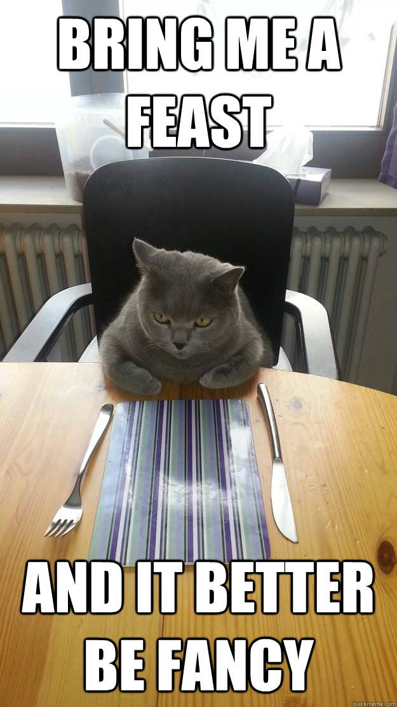
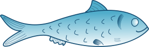
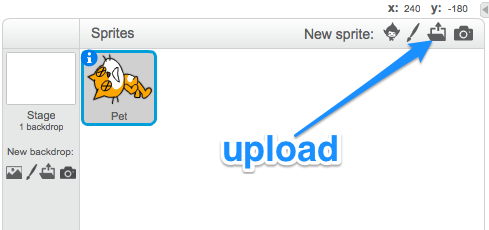
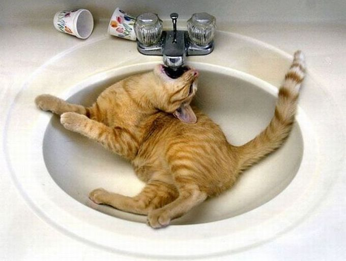
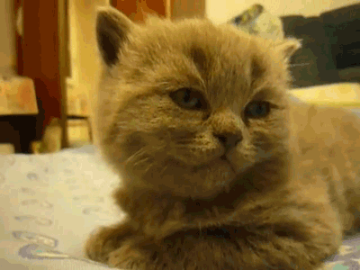
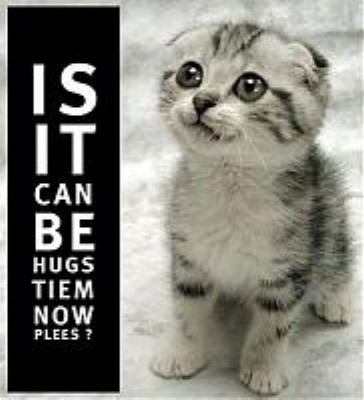

A Virtual LOLcat in Scratch
Table of Contents
1 Feeding the pet

Research It
- At the moment, all we have is a script that kills the pet when it's hunger reaches 100.
- We need a way to feed the pet, so that we can reset it's hunger back to 0
- To do this, we'll need a new sprite. Either draw or find a picture of some food that is appropriate to feed your pet with.
- I'm going to use this one.

Code It
- We need to import our image into Scratch next, so that we can use it as a Sprite.
- In the Sprites panel, click on the upload button and choose your image of the pet food.

- You might need to edit the size of your Sprite using the Costumes tab, and then position it somewhere sensible on the stage
Code It
- Now we have a new sprite, we have a new place to add code.
- Click on your food sprite, and you should see a blank scripts area.
- To get back to the scripts you have written previously, you can click on your pet sprite.
- The following code goes with the PetFood Sprite not the Pet Sprite
when this sprite clicked set PetHunger to 0
Run It
- Run your programme.
- The PetHunger variable should increase, but be reset to 0 whenever the PetFood Sprite is clicked.
- If it doesn't work then read back over the instructions, ask a friend and finally ask your teacher.
2 Tiredness, Happiness and Thirst
Badge It
In the previous lesson you made variables for PetTiredness, PetThirst and PetHappiness. To get your badge for this lesson you need to complete the following tasks. Complete all three and you'll get a platinum badge.
- Silver

- Find or make an image to represent a drink for your pet. PetThirst should increase gradually increase and then be reset to 0 when the drink sprite is clicked. If it reaches 100, the pet should die.
- Gold

- Find or make an image to represent a bed for your pet. PetTiredness should increase gradually and then be reset to 0 when the bed sprite is clicked. If it reaches 100 the pet should die.
- Platinum

- PetHappiness should start at 100 and gradually decrease until it hits 0, at which point the pet should die. If the pet sprite is clicked (representing stroking the pet), then it's happiness should be reset to 100.